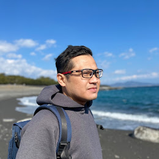

I'm Aji

Summary
Hello! My name is Wisnu Aji Wibowo.
I am a passionate Web Developer with a deep interest in technology. Always on the lookout for opportunities to integrate my knowledge with my current interests, I am open to collaborating on Web Development projects. I believe in the power of shared learning and collaboration and am eager to bring my strong collaborative skills to a dynamic team, where I can contribute to projects and initiatives.
Hobbies
- Web Development: I enjoy creating and optimizing websites, exploring new web technologies, and implementing innovative web solutions.
- Farming: I have a passion for agriculture and enjoy spending time cultivating plants and understanding the science of crop growth.
Contact Me
Education
- Present
- Bachelor Degree of Information Technology, Siber Muhammadiyah University.
- Previous Education
- Master Degree of Soil Science, Universitas Gadjah Mada, Indonesia.
- Master Degree of Research Student, Soil Science and Plant Nutrition Laboratory, Yamagata University, Japan.
- Bachelor Degree of Agriculture Technology, Sarjanawiyata Tamansiswa University.
Work Experience
Skills
- Web Development.
- Integrated Smart Farming.
- Language
- English.
- Japanese.
- Indonesian.
- Javanese.
Award
- Awarded the prestigious JASSO (Japan Student Services Organization) Scholarship for academic excellence.
Community Involvement
- Founder, Youth Farming Community, Sleman, Indonesia: Initiated and led a community focused on promoting and supporting youth involvement in farming.
- Founder, Youth Coding Community, Shizuoka, Japan: Established a platform for young individuals to explore and enhance their coding skills.